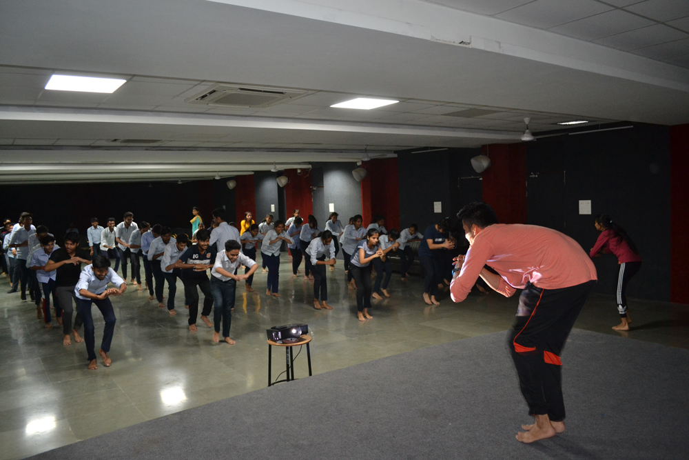
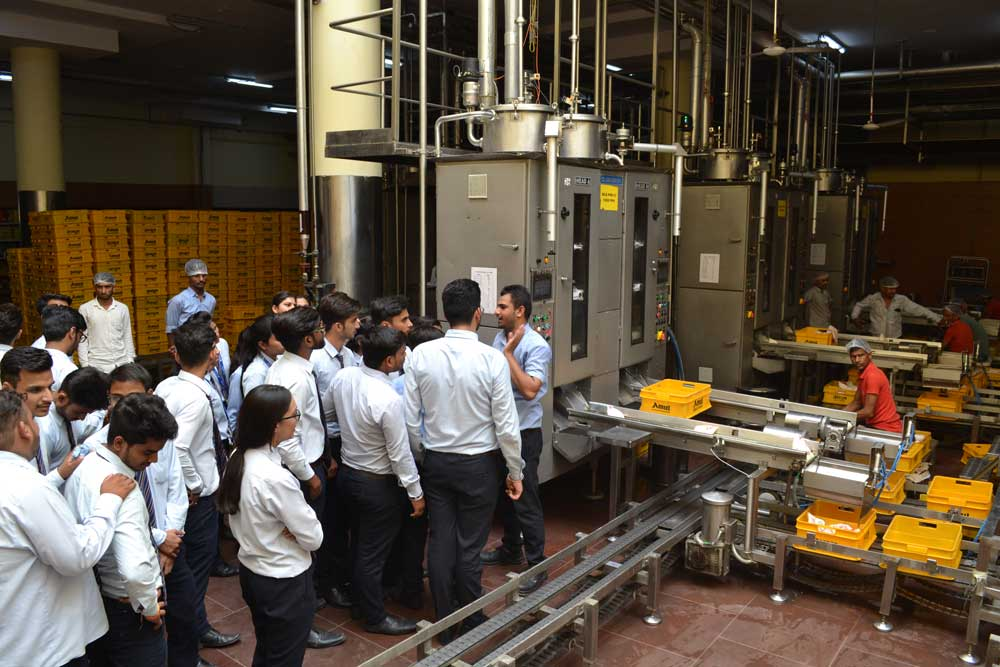
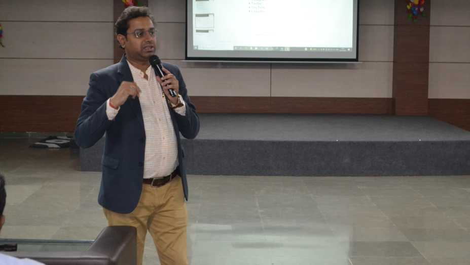
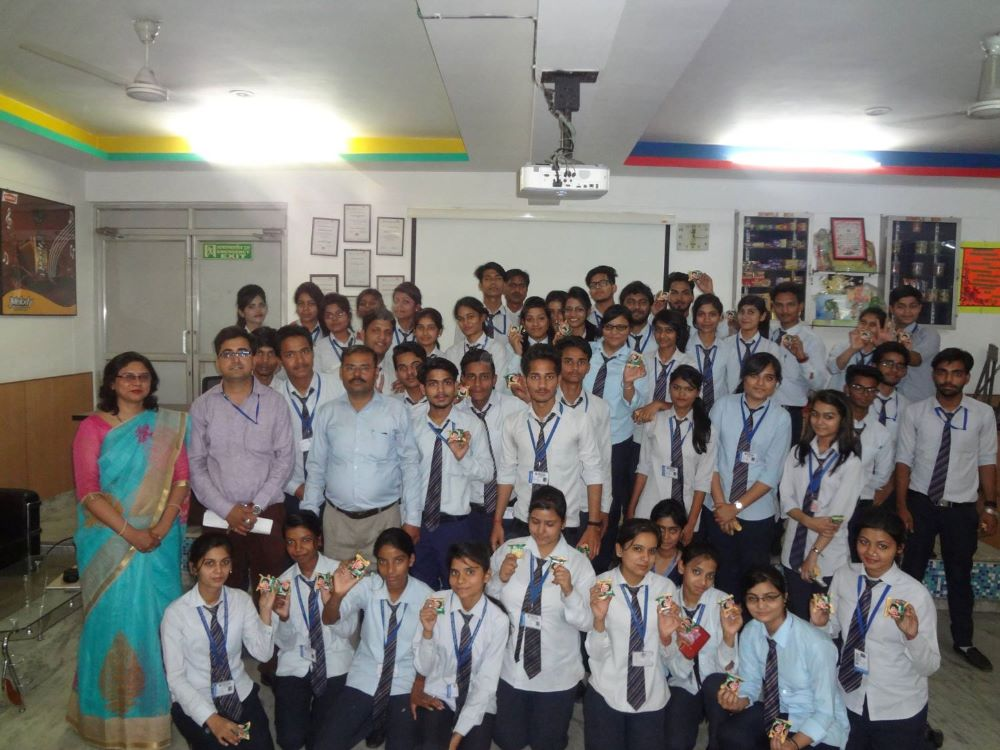

About ABS
Allenhouse Business School, affiliated to C.S.J.M. University Kanpur, was established in the year 2015 to ensure quality education in the field of Management & Computer Application and to empower students to compete in a constantly evolving job market.
The Institute has been ranked 2nd in Uttar Pradesh by ‘Best Academia Industry Alliance’ and as the 4th Top Emerging BBA Institute in India by ‘The Times of India, Business School Survey 2020’. The institute has been persistently endeavouring to ascend further. Allenhouse Business School has flourished in the field of Management and IT education with its students achieving exponential growth under guidance of experienced and intellectual faculty members. Learning is made easy and effective at Allenhouse Business School through guest lectures, case studies, & group discussions fostering high quality education. The students of Allenhouse Business School are also trained and evaluated on their team work, communication skills, decision-making ability, leadership quality, etc. in order to prepare them for a volatile business scenario.
Documentary Video
Click here to watch the video and know more.Watch this video to explore the vibrant life and opportunities at our campus. The environment and surroundings of a college play a crucial role in shaping students' experiences and overall well-being. A college campus, when designed and maintained thoughtfully, can offer numerous benefits that contribute to a conducive learning environment and personal development. A college's environment and surroundings greatly influence the educational experience and well-being of its students. A harmonious blend of natural beauty, sustainability initiatives, educational opportunities, and community engagement fosters an environment conducive to learning, personal growth, and environmental consciousness. Colleges that leverage their surroundings effectively can offer students a holistic and enriching educational experience.
Happenings in ABS
●→ Self Defence
Allenhouse Business School, Rooma , Kanpur, conducted a ‘Self defence’ session on October 15, 2019, under the “Fit India Campaign”for teaching students the importance of self defence in our life. It is rightly said, “Training for self defense is not a cost….. It’s rather an investment.”
Fitness is far more than simply exercising on a regular basis. Fitness, as a term, is contextual. It could be described as “being fit for taking on challenges set in front of you”. One should always be mentally fit and physically fit as well. Just like fitness, self defense is equally important for women as well as men. Self-defence is a risk reduction strategy that offers training and education on how to face dangerous situations. The aim is to make students aware about the various techniques of self defense and motivate them to take suitable steps to defend themselves. Mr. Vibhor Verma(National Refree, Black Belt, National Gold Medalist)and a student of BBA 2ndyear (batch 2018-21), guided students of BCA 2nd year.
●→ An educational tour to AMUL
Allenhouse Business School organized an Industrial Visit for the students of BBA from September 16, 2019 to September 18, 2019 to Amul Industrial Plant located in UPSIDC Industrial Area Jainpur (Ext.) Mati, Kanpur, which is about 55 Kms from Kanpur and is spread over 40 acres of land. It was an extremely enriching experience for the students, who gained practical exposure to industrial operations.
●→ Digital Marketing & Search Engine Optimization
During the seminar, Mr. Vikas Nigam, Director of Hatsoff Technologies Software Pvt. Ltd., delivered an insightful talk focusing on the intricacies of marketing strategies intertwined with the nuances of search engine optimization, shedding light on their pivotal roles in the contemporary business landscape.
His comprehensive discourse not only highlighted the significance of robust marketing methodologies but also emphasized the critical synergy between effective SEO practices and modern business paradigms. With practical insights and real-world examples, Mr. Nigam elucidated how a well-crafted marketing strategy complemented by optimized search engine techniques could significantly enhance brand visibility, customer engagement, and overall business growth in today's competitive market environment. Attendees gained valuable insights into leveraging digital platforms, maximizing online presence, and employing SEO tactics to drive organic traffic and achieve sustainable success in the digital marketplace. Mr. Nigam's expertise and elucidative session left the audience empowered with actionable strategies to navigate and thrive in the ever-evolving landscape of digital marketing and SEO.
●→ An educational tour to PARLE G
Allenhouse Business School organized an Industrial Visit for BBA students to Swati Biscuits Pvt. Ltd, the manufacturers of Parle G Biscuits, located at Dadanagar September 12, 2020 and September 13, 2109. This Industrial visit to Parle G aimed at enhancing practical and industrial knowledge of BBA students. The main objective behind the visit was to make the student aware of logistical, documentational and other managerial activities.
The meticulously planned Industrial Visit to Swati Biscuits Pvt. Ltd, renowned manufacturers of the iconic Parle G Biscuits, situated at Dadanagar on September 12, 2020, and September 13, 2019, was a pivotal initiative orchestrated by Allenhouse Business School. This enriching experience was tailored to offer BBA students a firsthand exposure to the operational intricacies and logistical dynamics within a prominent manufacturing setup. The visit aimed not only to augment the students' theoretical understanding but also provided an immersive insight into the practical dimensions of industrial processes. By observing and engaging with the day-to-day managerial activities, documentation procedures, and logistical operations at Swati Biscuits Pvt. Ltd., students were afforded a holistic perspective on how theoretical concepts manifest in real-world business scenarios. This visit served as a cornerstone in fostering a deeper comprehension of business logistics, supply chain management, and the multifaceted managerial aspects, equipping students with invaluable practical knowledge that complements their academic learning and prepares them for future professional endeavors in the realm of business administration.